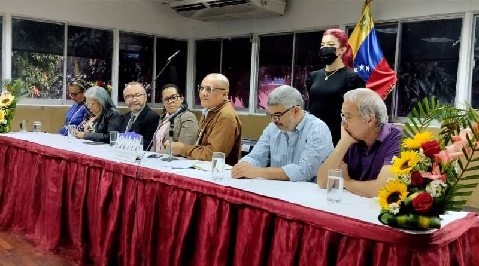
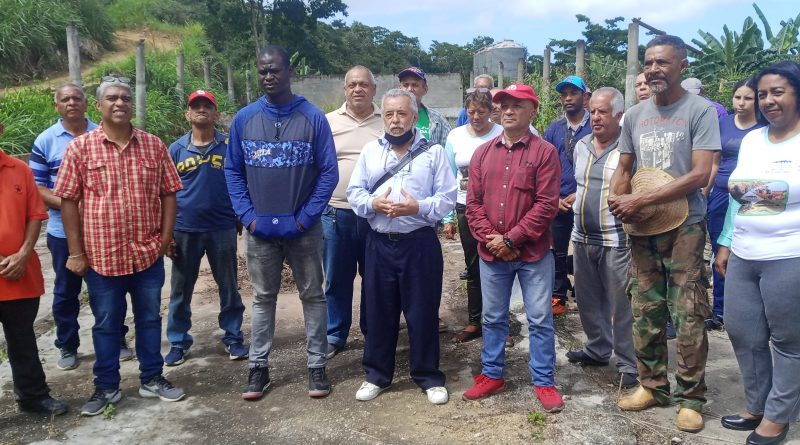
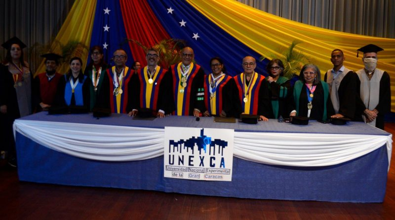
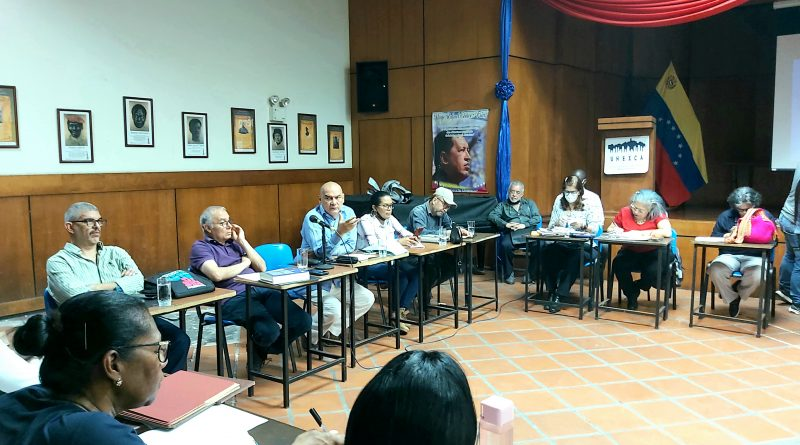

La UNEXCA entregó reconocimiento al personal docente, administrativo y obrero

Unexca inició proceso de abastecimiento comunitario en la sede Carayaca

Unexca graduó más de 700 profesionales en la IX Promoción 2022-2

Unexca realizó primer Consejo Universitario del año 2023